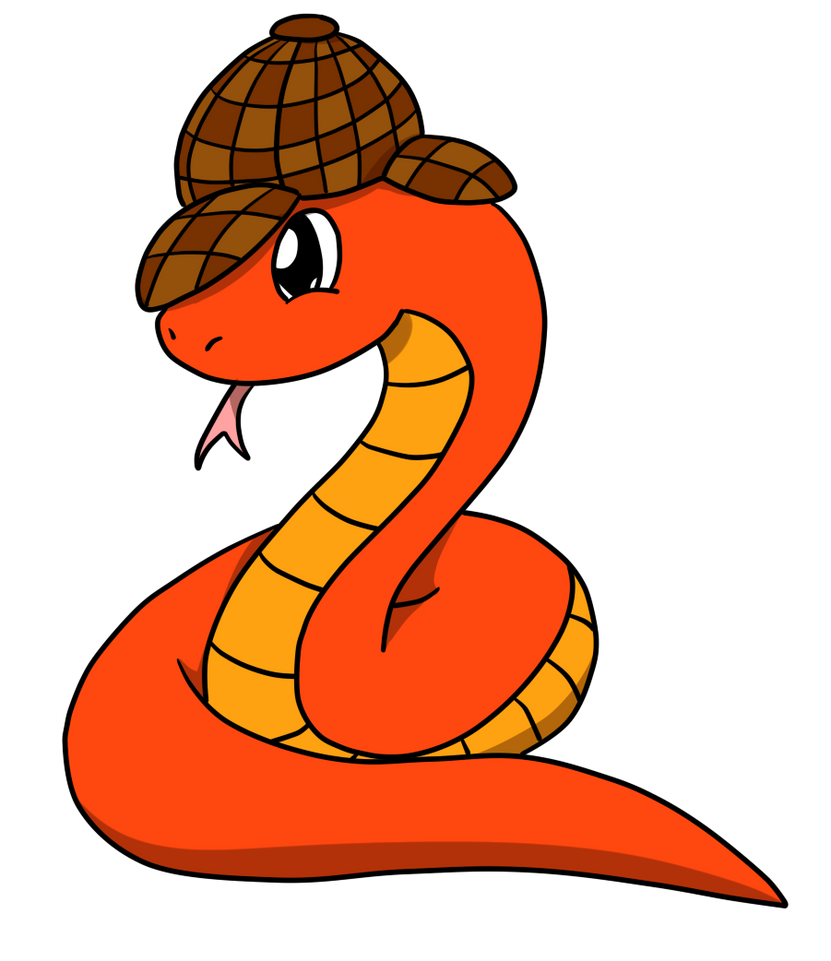

Welcome to Spy4Cast’s documentation! #
{kind=link}
Spy4Cast is a framework for working with .nc files and applying methodologies to them as well as plotting.
Note
This project is under active developement
Installation#
(<your-env-name>) $ conda install cartopy
(<your-env-name>) $ pip install git+https://github.com/pabloduran016/Spy4Cast
Run the methodology#
from spy4cast import Dataset, Region, Month
from spy4cast.spy4cast import Preprocess, MCA, Crossvalidation
# Selction of datasets
ds_y = Dataset("sea_surface_temperature.nc", folder="datasets").open('sst')
ds_y.slice(Region(-20, 20, -150, -90, Month.AUG, Month.NOV, 1971, 2003))
ds_z = Dataset("atmospheric_pressure.nc", folder="datasets").open('pr')
ds_z.slice(Region(11.5, 16.5, -25, -15, Month.FEB, Month.MAY, 1972, 2004))
# Data preprocessing: anomaly, filter and reshaping
y = Preprocess(ds_y)
z = Preprocess(ds_z)
y.save('y_', folder='saved_data')
z.save('z_', folder='saved_data')
# application of maximum covariance anaysis for 3 modes and 0.1 significance level
mca = mca(y, z, 3, 0.1)
mca.save('mca_', folder='saved_data') # Save and load data later with MCA.load
cross = Crossvalidation(y, z, 3, 0.01)
cross.save("cross_", folder="saved_data") # Load data later with: Crossvalidation.load
mca.plot(show_plot=True)
mca.plot(show_plot=True, halt_program=True) # halt_program to be able to see all the figures together
Analyse results#
from spy4cast.spy4cast import Preprocess, MCA, Crossvalidation
import matplotlib.pyplot as plt
import numpy as np
import cartopy.crs as ccrs
y = Preprocess.load('y_', folder='saved_data')
z = Preprocess.load('z_', folder='saved_data')
mca = MCA.load('mca_', folder='saved_data', dsy=y, dsz=z)
fig = plt.figure()
ax = fig.add_subplot(1, 1, 1, projection=ccrs.PlateCarree())
nlat, nlon = len(y.lat), len(y.lon)
ruy = mca.RUY[:, -1].reshape((nlat, nlon))
im = ax.contourf(y.lon, y.lat, ruy, cmap='Reds')
fig.colorbar(im, ax=ax, orientation='horizontal')
ax.coastlines()
ax.set_title('Correlation between z and zhat')
fig.show()
{kind=link}